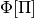
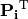
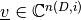
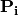
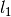
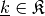
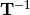
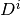

HagedornWavepacketTransformPhiPsi¶
About the HagedornWavepacketTransformPhiPsi class¶
The WaveBlocks Project
@author: R. Bourquin @copyright: Copyright (C) 2010, 2011, 2012, 2013, 2014, 2015, 2016 R. Bourquin @license: Modified BSD License
Inheritance diagram¶

Class documentation¶
-
class
WaveBlocksND.HagedornWavepacketTransformPhiPsi[source]¶ Implementation of the unitary transformation between old-kind Hagedorn wavepackets  and new-kind Hagedorn wavepackets
![\Psi[\Pi]](../_images/math/b6c6bf2f8fda162a7173b3af497cb3798710077c.png) .
.-
multiply_PiT_v(nu, mu, lut, v)[source]¶ Multiply the matrix  by a vector
 from the right. Do not construct the matrix explicitly.
from the right. Do not construct the matrix explicitly.Parameters: - nu – The list
 .
. - mu – The list
 .
. - lut – The lookup table.
- v – The vector .
- nu – The list
-
multiply_Pi_v(nu, mu, lut, v)[source]¶ Multiply the matrix  by a vector
from the right. Do not construct the matrix explicitly.Parameters: - nu – The list .
- mu – The list .
- lut – The lookup table.
- v – The vector
 .
.
- nu – The list
-
multiply_T_v(coeffs, K, NU, MU, D, J)[source]¶ Apply the transformation matrix to the coefficients
 .
.Parameters: - coeffs – The coefficients vector .
- K – The overlap matrix
 .
. - NU – The list of all .
- MU – The list of all .
- D – The dimension
 .
. - J – The maximal  norm of any .
- coeffs – The coefficients vector
-
multiply_Tinv_v(coeffs, K, NU, MU, D, J)[source]¶ Apply the transformation matrix  to the coefficients
 .
.Parameters: - coeffs – The coefficients vector .
- K – The overlap matrix .
- NU – The list of all .
- MU – The list of all .
- D – The dimension .
- J – The maximal norm of any .
- coeffs – The coefficients vector
-
multiply_kronecker_power_v(D, A, v, i)[source]¶ Multiply the
 -th Kronecker power of the matrix
-th Kronecker power of the matrix  by a vector from the right.
by a vector from the right.Parameters: - D – The dimension .
- A – The matrix .
- v – The vector .
- i – The non-negative integer Kronecker power exponent.
Note
The matrix has to be square and of size .
- D – The dimension
-
overlap(D, Pi, eps)[source]¶ Compute the overlap matrix:
![\mathbf{K}_{r,c} := \langle \psi_{\underline{e_r}}[\Pi] | \phi_{\underline{e_c}}[\Pi] \rangle](../_images/math/e9f1db5308e8561a22b57f2f6afb1006bb8c01b8.png)
Parameters: - D – The dimension .
- Pi – The parameter set
 .
. - eps – The semiclassical scaling parameter
 .
.
- D – The dimension
-